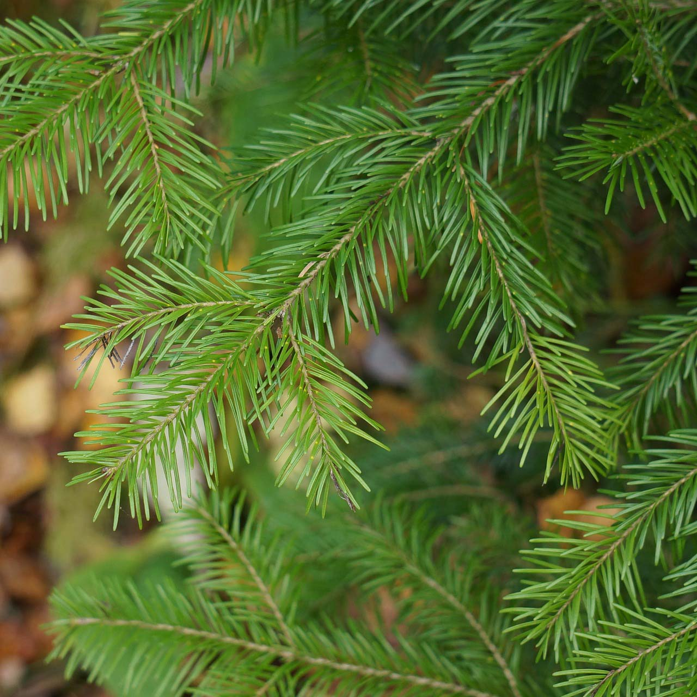
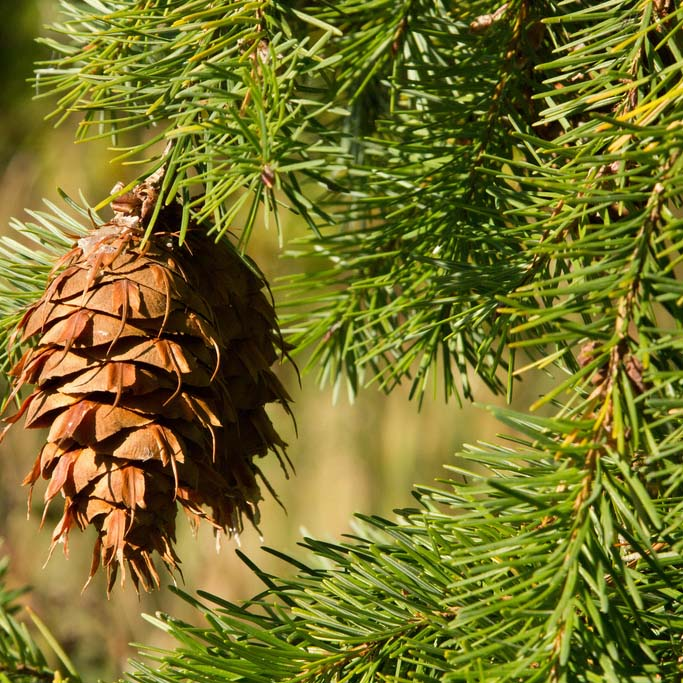
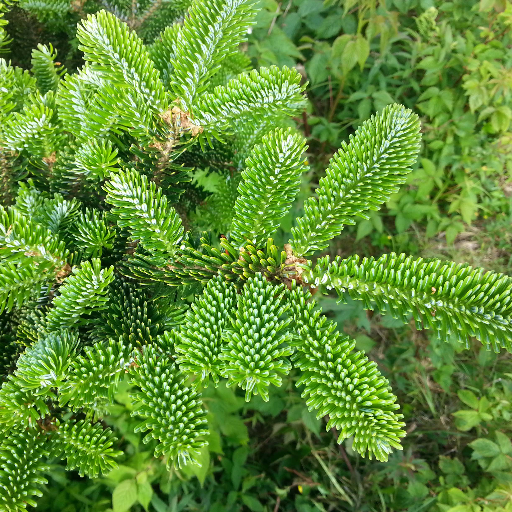

Balsam Fir

This is the traditional christmas tree. It is most recognizable because of its short flat needles which are rounded at the tip and curve upwards. It is dark green in color and sheds very little.
View Availability
Douglas Fir

This tree is blue green or dark green in color with needles spreading in all directions from the branch. It's needles give off a sweet fragrance when crushed.
View Availability
Fraser Fir

This tree is most recognizable by the two silvery stripes on the underside of each needle. Like the balsam, its needles curve upwards. It's named after John Fraser, a Scottish botanist who explored the southern Appalachian Mountains in the late 18th century.
View Availability